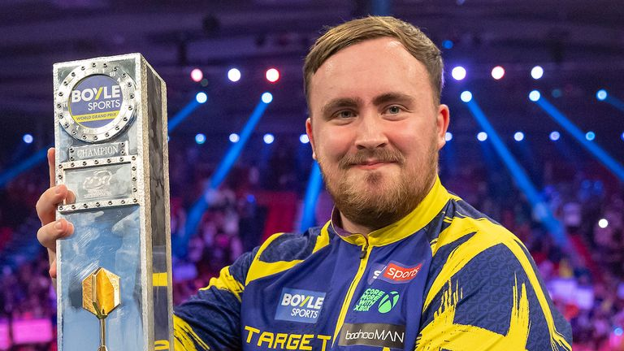

Az egyetlen olyan nagytorna, ahol a leg megnyeréséhez nemcsak dupla szektorral kell kiszállni (befejezni), hanem duplával is kell elkezdeni (Double In / Double Out).
Az év nyolcadik nagy tornája.
A 2025-ös győzelemmel a bajnoki cím mellett a £120 000-os fődíjat is hazavihette.
Október eleje
Leicester - Mattioli Aréna (Anglia)